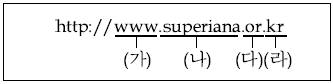

인터넷정보관리사-2급 (2012-12-08 기출문제)
1과목: 인터넷의 이해
1. 인터넷과 관련된 설명으로 틀린 것은?
- 세계 누구나 정보를 쉽고 빠르게 교환할 수 있는 개방형 구조이다.
- 인터넷의 효시는 상업적인 목적으로 개발된 NATIS이다.
- Gopher, Archie 등의 서비스가 있다.
- 인터넷을 통제하는 중앙 통제 기구는 없다.
(정답률: 63%)

2. 국내 인터넷의 역사와 관련하여 가장 거리가 먼 것은?
- 우리나라 인터넷 시초는 1982년 연세대에서 FTP, TELNET 등을 이용한 것이다.
- 2009년 KISA, NIDA, KIICA가 통합하여 KISA가 설립되었다.
- 1990년 HANA망이 설립되었다.
- 1994년 상업망 시대의 원년으로 본격적인 상용 접속 서비스가 제공되었다.
(정답률: 69%)
3. 국내외의 교육기관과 정부기관 등을 상호 연결하고 효율적인 정보 교환의 수단을 제공하여 교육 및 학술연구 활동을 지원하는 전산망은?
- FNIS
- DNIS
- KREN
- NATIS
(정답률: 73%)
4. 해설요구문서(RFC)에 대한 설명으로 옳은 것은?
- 컴퓨터 통신 및 인터넷과 관련된 표준 규격을 제시하는 문서이다.
- 출판된 RFC 문서는 필요에 따라 언제든지 변경이 가능하다.
- 모든 RFC 문서는 인터넷 사이트에서 검색은 가능하나 다운로드 할 수 없다.
- RFC 문서에 출판 날짜는 기록되지만 저작권 보호를 위해 제안자 이름은 공개하지 않고 있다.
(정답률: 40%)
5. 인터넷 주소체계에 대한 설명으로 틀린 것은?
- IP주소는 인터넷에 연결된 컴퓨터에 부여되는 숫자로 된 고유의 주소이다.
- IP는 Internet Protocol의 약자이다.
- IPv6는 64비트 체계이며, 16비트씩 4개의 옥텟으로 구성되어 있다.
- IPv4는 10진수 숫자로 표기된다.
(정답률: 80%)
6. 국내 도메인 이름의 주소체계를 설명한 것으로 틀린 것은?

- (가)는 호스트의 이름을 의미한다.
- (나)는 도메인 이름을 의미한다.
- (다)는 차상위 도메인으로, or은 대학 등의 교육기관에 부여한다.
- (라)는 최상위 도메인으로, kr은 우리나라의 최상위 도메인 국가코드이다.
(정답률: 71%)
7. 해외 도메인 구조에서 국가별 최상위 도메인 연결이 적합하지 않은 것은?
- au : 중국
- uk : 영국
- de : 독일
- us : 미국
(정답률: 79%)
8. 다음 중 최상위 도메인(TLD)이 아닌 것은?
- com
- coop
- biz
- kg
(정답률: 38%)
9. 방송통신위원회 홈페이지 주소로 맞는것은?
- http://www.kcc.sc.kr
- http://www.kcc.go.kr
- http://www.kcc.co.kr
- http://www.kcc.ms.kr
(정답률: 54%)
10. 전자우편 메시지의 헤더를 구성하는 요소와 가장 거리가 먼 것은?
- IMAP
- From
- Date
- Subject
(정답률: 54%)
11. 전자우편의 주소 형식으로 옳지 않은 것은?
- 사용자ID@호스트 도메인
- 사용자ID@호스트 네임
- 사용자ID@개인PC 닉네임
- 사용자ID@IP 주소
(정답률: 60%)
12. 다음 중 공인 인증서를 발급하는 공인인증기관에 해당되지 않은 기관은?
- 한국세무협회
- 한국정보인증
- 한국전자인증
- SIGNKOREA
(정답률: 65%)
13. FTP 명령어에 대한 설명으로 틀린 것은?
- mget : 여러 개의 파일을 자신의 컴퓨터 시스템으로 다운로드
- mput : 여러 개의 파일을 원격 컴퓨터 시스템으로 업로드
- hash : 파일의 전송 상황을 ‘$’으로 표시
- pwd : 현재 디렉토리의 위치를 표시
(정답률: 65%)
14. FTP 서비스 이용 방법에 대한 설명 중 틀린 것은?
- 파일 뿐만 아니라 폴더 전송도 가능하다.
- 웹 브라우저로 FTP 서비스를 이용할 때는 별도의 FTP 전용 프로그램이 필요 없다.
- 현재까지는 텍스트 전송만 가능하며 이진파일 전송 기술은 개발중이다.
- 웹 브라우저로 FTP 서버에 접속하여도 파일을 다운로드 받을 수 있다.
(정답률: 77%)
15. 유즈넷에 대한 설명으로 맞는 것은?
- 주제에 따라 분류된 계층적 구조를 이루고 있다.
- 기사를 전송하기 위해 개발된 프로토콜은 NNTP이다.
- 유즈넷 서비스를 제공하는 역할을 하는 컴퓨터를 뉴스 리더라고 한다.
- 통제력을 갖는 강력한 조직이 있다.
(정답률: 36%)
16. 다음 중 뉴스그룹의 대표적인 모그룹이 아닌 것은?
- com
- news
- soc
- talk
(정답률: 56%)
17. 저작권법 상저작물로 보호받을 수 있는 것은?
- 공개 법정에서의 연설
- 회화, 서예 등의 미술저작물
- 사실 전달에 불과한 시사보도
- 국가 또는 지방공공단체의 공고
(정답률: 73%)
18. 메신저의 특징으로 가장 옳지 않은 것은?
- 텍스트 파일만 전송 가능
- 참여자들끼리 실시간으로 응답
- 시간과 공간의 제한없는 실시간 대화
- 자신의 신분을 드러내지 않고 닉네임을 사용
(정답률: 70%)
19. 다음 중 채팅 프로그램이 아닌 것은?
- MSN Messenger
- NateOn
- Buddy Buddy
- V3 ZIP
(정답률: 88%)
20. 기업과 소비자간의 전자상거래로써 사이버몰을 통한 전자 소매업을 뜻하는 것은?
- B to B
- B to C
- G to B
- G to C
(정답률: 70%)
21. 데이터베이스제작자의 권리는 언제부터 발생하는가?
- 데이터베이스 제작이 완료된 다음해부터
- 데이버베이스 제작이 완료된 3년 후부터
- 법원에 저작권을 신고한 때부터
- 데이터베이스 제작이 완료된 때부터
(정답률: 63%)
22. 무명 또는 이명 저작물의 보호기간은 공표된 후 몇 년간 존속하는가?
- 5년
- 10년
- 30년
- 50년
(정답률: 65%)
23. 공공기관의 개인정보보호에 관한 법률에 근거한 개인정보에 해당되지 않는 것은?
- 성명, 주민등록번호
- 해당 정보의 특정 항목에 의해 개인을 식별 할 수 있는 정보
- 다른 정보와 용이하게 결합하여 개인을 식별 할 수 있는 정보
- 학술연구를 목적으로 하는 특정 개인을 식별 할 수 없는 정보
(정답률: 67%)
24. 다음 중 올바른 네티켓이 아닌 경우는?
- 자료를 인용할 때는 출처를 반드시 밝힌다.
- 주제에 대한 논쟁은 감정을 절제하여 진행한다.
- 채팅 시에는 반드시 이모티콘을 사용해야 한다.
- 상대방의 사생활을 존중한다.
(정답률: 79%)
25. 본문의 내용과는 상관없는 악의적인 리플을 반복해서 달아놓는 사람을 무엇이라고 하는가?
- 스푸밍
- 악플러
- 크래커
- 트래커
(정답률: 80%)
26. 인터넷에서 네티즌들과 대화를 할 때 사용하지 않아야 하는 것은?
- 외계어
- 이모티콘
- 명확한 언어
- 약어
(정답률: 77%)
27. 컴퓨터의 구성 요소 중 보조기억장치에 속하지 않는 것은?
- 하드디스크
- CD-ROM
- 자기디스크
- ROM
(정답률: 42%)
28. 외부로부터 입력되는 일련의 데이터를 모아 두었다가 일정한 시간이 되면 미리 정해진 순서에 따라 차례대로 처리하는 방식은?
- 일괄처리
- 분산처리
- 병렬처리
- 실시간처리
(정답률: 73%)
29. 해킹 프로그램의 일종으로 네트워크를 통해 상대방의 시스템에 기생하여 모든 활동을 유출시키며 불법으로 원격통제가 가능하게 하는 프로그램은 무엇인가?
- 백오리피스
- 부트 바이러스
- 파일 바이러스
- 매크로 바이러스
(정답률: 42%)
30. 압축프로그램에 대한 설명으로 틀린 것은?
- 파일의 크기를 작게 압축하여 제한되어 있는 디스크 공간을 효율적으로 사용
- 자료를 백업할 때 하나의 압축 파일로 저장하여 보관이 편리
- 압축한 파일을 전자우편 등으로 첨부하여 전송하는 경우 상호간 시간과 공간을 절약
- 한번 압축한 파일을 계속해서 압축시 용량 크기감소
(정답률: 77%)
31. 윈도우상에서 LAN을 이용하여 인터넷에 접속하려고 할 때 점검할 내용으로 가장 거리가 먼 것은?
- LAN선 연결이 제대로 되어 있는지 살펴본다.
- TCP/IP 프로토콜 설치 상태를 확인한다.
- NetBEUI 프로토콜 설치 상태를 확인한다.
- 고정 IP가 부여될 경우, 할당 받은 IP 주소를 설정한다.
(정답률: 66%)
32. 다음 인터넷 전용회선 중 전송속도가 가장 빠른 것은?
- T1
- T2
- T3
- 256K
(정답률: 66%)
33. 케이블 TV망에 대한 설명으로 틀린 것은?
- IP 주소를 유동적으로 할당한다.
- 별도의 장비는 전혀 필요 없다.
- 전화선과 별도로 사용할 수 있다.
- 아날로그 전송 방식이다.
(정답률: 64%)
2과목: 인터넷 자원 탐색
34. ISDN채널 중 기본적인 사용자 정보채널이며 음성, 오디오 데이터를 전송하는 것은?
- B채널
- D채널
- F채널
- H채널
(정답률: 62%)
35. RADSL에 대한 설명으로 틀린 것은?
- ADSL과 SDSL의 장점만을 취합한 장비이다.
- 상향 속도와 하향 속도가 같다.
- 최대 전송거리는 5.4Km이다.
- 우수한 안정성 및 보안성을 가진다.
(정답률: 63%)
36. 웹 서버와 웹 브라우저 간에 하이퍼텍스트 문서를 주고받기 위한 통신 규약은 무엇인가?
- FTP
- HTTP
- UDP
- ARP
(정답률: 70%)
37. 웹 관련 용어 중, 다른 미디어 사이를 연결하는 링크로서 URL 형식에 따라 특정 문서나 파일의 위치를 찾아갈 수 있도록 하는 것을 뜻하는 용어는 무엇인가?
- PPP
- 클라이언트
- 하이퍼링크
- CGI
(정답률: 85%)
38. URL의 구성 요소에 포함되지 않는 것은?
- 프로토콜
- 호스트.도메인
- 디렉토리/파일명
- 접속 패스워드
(정답률: 59%)
39. 다음 중 Well-Known Port Number와 서비스가 바르게 연결된 것은?
- FTP-23
- HTTP-85
- NNTP-119
- POP-111
(정답률: 59%)
40. 홈페이지 저작도구에 대한 설명으로 틀린 것은?
- 메모장으로 직접 Markup태그를 입력하여 홈페이지를 만들 수 있다.
- Adobe사에서 개발된 드림위버는 다이나믹 HTML 제작 기능이 뛰어나 동적인 홈페이지를 제작 하는데 유용하다.
- 플래시는 용량이 적어 웹페이지에 많이 활용된다.
- 프론트페이지는 마이크로소프트사에서 개발 되었다.
(정답률: 36%)
41. 다음 중 HTML에 대한 설명으로 틀린 것은?
- 다른 문서들과 링크가 가능하지만, 같은 문서내에서는 링크가 불가능 하다.
- 그래픽, 사운드, 동영상 같은 멀티미디어 요소의 링크도 가능하다.
- 확장자로 thtmt, thtml을 사용한다.
- 웹페이지의 글자크기, 글자색, 글자모양 등을 정의하는 명령어로 쓰인다.
(정답률: 42%)
42. HTML 태그들 중 문자를 표현하는 것과 가장 관계가 없는 것은?
- <I>
- <HR>
- <SUP>
- <SUB>
(정답률: 55%)
43. HTML 작성방법에 대한 설명으로 틀린 것은?
- <HTML>Tag는 시작 Tag(‘<’)와 닫기 Tag(‘/>“)로 구성된다.
- <br>,<p>, <hr> Tag는 단독으로 사용된다.
- 공백이나 몇 가지 기호들은 특수기호를 사용해야 한다.
- <HTML>Tag는 반드시 대문자로 작성되어야 한다.
(정답률: 56%)
44. 웹 환경에서 구축되는 서버 측 웹 프로그래밍 언어가 아닌 것은?
- JSP
- ASP
- SGML
- PHP
(정답률: 45%)
45. 다음 중 멀티미디어 기술의 발전을 뒷받침 할 수 있는 배경과 거리가 먼 것은?
- 데이터 압축 기술의 발전
- 아날로그 데이터 기술의 발전
- 인터넷 기술의 발전
- 하드웨어 기술의 발전
(정답률: 65%)
46. 다음 중 멀티미디어의 압축 기술이 아닌 것은?
- 디지털화
- 통합성
- 비선형성
- 단방향성
(정답률: 67%)
47. 인터넷에서 “자연의신비.avi” 를 다운 받았다. 이 파일을 열어 보기에 가장 적절한 프로그램은?
- GOM Player
- Acrobat Reader
- Photoshop
- Almap
(정답률: 80%)
48. 다음 중 확장자의 성격이 다른 것은?
- BMP
- GIF
- GUL
- JPG
(정답률: 53%)
49. 다음 파일형태 중 플러그인 프로그램을 통해 지원되지 않는 것은?
- MOV
- HWP
- HTML
(정답률: 41%)
50. 플러그인 프로그램의 개념에 대한 설명 중 틀린 것은?
- 플러그인은 인터넷의 특정 사이트나 공개 자료실을 이용하면 쉽게 다운로드할 수 있다.
- 플러그인은 필요에 따라 웹 브라우저에서 실행되지만 단독으로는 실행할 수 없다.
- 여러 가지 응용프로그램에서 제작한 동영상, 오디오 등의 다양한 형식의 파일을 보거나 들을 수 있게 해준다.
- 웹 서비스의 가장 큰 장점 중의 하나인 멀티미디어 요소를 제대로 활용 할 수 있도록 도와준다.
(정답률: 66%)
51. 플러그인 프로그램의 종류와 확장자가 잘못 연결된 것은?
- ShockWave Flash - SWE
- Real Player - RA(RAM)
- QuickTime - MOV
- Windows Media Player - ASF
(정답률: 35%)
52. 인터넷 검색 중 한국사 문제 모음 파일인 한국사.pdf 를 찾았다. 이 파일을 선택해서 내용을 확인하려고 하였으나 파일의 내용을 알 수 없었다. 어떤 프로그램을 설치하여야 이 파일의 내용을 확인할 수 있는가?
- 한글 2010
- Power Point 2010
- Excel 2010
- Acrobat Reader
(정답률: 65%)
53. 웹 브라우저에 대한 설명으로 올바른 것은?
- HTTP와 HTTPS 두 프로토콜만 지원된다.
- 하이퍼미디어 정보를 사용하지 못하는 단점이 있다.
- 파이어폭스 (Firefox)는 리눅스 전용 브라우저이다.
- 이전에 방문했던 웹페이지를 재방문하면 로딩시간이 짧다.
(정답률: 54%)
54. 다음 인터넷 관련 프로그램들 중 성격이 가장 다른 것은?
- 핫 자바
- 오페라
- 사파리
- 아파치
(정답률: 50%)
55. 최초의 그래픽기반 웹 브라우저는?
- 모자익
- 링스
- 인터넷 익스플로러
- 넷스케이프
(정답률: 75%)
56. 다음 중 텍스트 기반의 브라우저가 아닌 것은?
- 삼바
- 아라크네
- 파이어폭스
- 링스
(정답률: 48%)
57. 인터넷 익스플로러의 기능과 그에 대한 설명으로 틀린 것은?
- 목록 보기 - 최근 열어본 페이지 목록을 주소 표시줄 아래에 표시한다.
- 한글 키워드 시스템 지원 - 영어로 입력된 URL을 인식하여 한글로 된 사이트를 검색한다.
- 웹 페이지 저장 - 웹 페이지의 텍스트, 이미지, 프레임 구조를 하나의 파일로 저장한다.
- 자동 완성 - URL이나 키워드를 입력할 때, 이전에 입력된 정보를 재활용하여 자동으로 글자 전체를 완성시켜 준다.
(정답률: 53%)
58. 인터넷 익스플로러 단축키와 그에 대한 설명으로 옳은 것은?
- Ctrl + N - 저장
- Ctrl + P - 복사
- Ctrl + D - 단어 찾기
- Ctrl + A - 모두 선택
(정답률: 70%)
59. 인터넷 익스플로러 기능 중에서 현재 페이지를 표시하는데 필요한 모든 정보를 하나의 압축 파일 형태로 저장하는 것은?
- 모든 웹 페이지 (*.htm, *.html)
- 웹 페이지 보관 파일 (*.mht)
- 웹 페이지 중 HTML만 (*.htm, *.html)
- 텍스트 파일 (*.txt)
(정답률: 52%)
60. 인터넷이 연결되지 않은 상태에서 인터넷 익스플로러의 이전 방문한 페이지를 볼 수 있는 기능은?
- 인코딩
- 동기화
- 오프라인으로 작업
- 새로고침
(정답률: 70%)
61. 인터넷 익스플로러의 [도구]-[인터넷 옵션]-[일반] 탭에서 할 수 없는 작업은?
- 신뢰할 수 있는 사이트 지정
- 쿠키 삭제
- 홈페이지 설정
- 열어본 페이지 목록 지우기
(정답률: 60%)
62. 인터넷 익스플로러에서 특정 사이트를 등록하여 방문하고자 할 때 바로 클릭하여 접속 할 수 있는 기능은?
- 바로가기
- 주소표시줄
- 히스토리
- 즐겨찾기
(정답률: 82%)
63. 검색엔진의 구성에 대한 설명으로 가장 올바른 것은?
- 로봇 (Robot)은 일정한 기간을 주기로 자신이 방문했던 사이트를 재방문하여 수집한 정보를 검색엔진 프로그램으로 넘긴다.
- 색인기 (Indexer)는 크롤러 (Crawler)라고도 불리며 웹 페이지 내용을 저장하고 있는 거대한 라이브러리이다.
- 검색엔진의 검색결과로 출력되는 정보의 우선순위는 검색엔진마다 다르다.
- 검색자가 키워드를 입력하여 검색할 때 로봇(Robot)으로 부터 검색 조건에 맞는 정보들을 추출해 낸다.
(정답률: 62%)
64. 검색엔진 로봇의 정보수집을 위한 방문대상이 아닌 것은?
- 로컬 컴퓨터의 신규 작성 중인 웹 페이지
- 인터넷 카페 등의 메일링 리스트
- What's New와 같은 신규 사이트
- 외부로 나가는 링크가 많은 페이지들
(정답률: 35%)
65. 검색엔진의 로봇이 웹에 미치는 영향으로 틀린 것은?
- 로봇은 작고 빠르기 때문에 네트워크상의 트래픽을 유발하지 않는다.
- 로봇으로 인해 CGI 프로그램 소스에 손상이 생길 수 있다.
- 로봇에 대한 접근을 막기 위한 로봇 배제 표준이 있다.
- 로봇으로 인해 웹 서버가 다운되는 경우도 있다.
(정답률: 70%)
66. 검색엔진에서 사용자간의 질문과 답변을 데이터 베이스로 구축하여 이를 대상으로 검색정보를 제공하는 것은?
- 열린 검색
- 뉴스 검색
- 지식 검색
- 미디어 검색
(정답률: 78%)
3과목: 인터넷 윤리
67. 검색엔진 로봇의 데이터베이스 구축방식으로 옳은 것은?
- 디렉토리 인덱스
- 매뉴얼 인덱스
- 에이전트 인덱스
- 링크 인덱스
(정답률: 50%)
68. 검색엔진의 검색결과 평가요소인 재현율과 정도율에 대한 설명으로 올바른 것은?
- 재현율은 높고, 정도율은 낮을수록 좋다.
- 재현율은 낮고, 정도율은 높을수록 좋다.
- 재현율과 정도율 둘 다 낮아야 좋다.
- 재현율과 정도율 둘 다 높아야 좋다.
(정답률: 43%)
69. 검색엔진을 키워드형과 메타형으로 구분할 때 가장 중요한 차이점은?
- 자체 데이터베이스 유무
- 자체 디렉토리 목록 유무
- 자체 로봇 프로그램 유무
- 자체 검색 프로그램 사용 유무
(정답률: 52%)
70. 삼성SDS의 사내 벤처에서 시작한 국내 검색 포털 서비스는?
- 다음
- 네이버
- 야후
- 네이트
(정답률: 81%)
71. 다음(Daum) 검색포털에서 제공하는 서비스가 아닌 것은?
- 한메일
- 키즈짱
- 오픈캐스트
- 아고라
(정답률: 38%)
72. 검색엔진에서 제공하는 서비스들 중에서 성격이 다른 하나는?
- 해피빈
- 쥬니버
- 키즈짱
- 꾸러기
(정답률: 80%)
73. 다음 검색포털 서비스들 중 동영상과 관계없는 것은?
- 호핀
- TV팟
- 판
- 웹툰
(정답률: 77%)
74. 검색엔진과 그 서비스를 연결한 것으로 틀린 것은?
- 구글 - 피카사
- 다음 - 로드뷰
- 네이트 - 유튜브
- 네이버 - N드라이브
(정답률: 80%)
75. 외국에서 개발된 검색엔진으로만 짝지은 것은?
- 네이트, 야후
- 야후, 다음
- 다음, 구글
- 구글, 야후
(정답률: 88%)
76. 미국의 DEC사에서 개발한 최초의 키워드 기반 검색엔진으로 현재 검색 후 Yahoo로 접속되는 국외검색엔진은?
- 알타비스타
- 구글
- 야후
- 익사이트
(정답률: 34%)
77. 정보검색 개념에 대한 설명으로 틀린 것은?
- 대량의 정보에서 필요한 정보를 신속하고 정확하게 찾는 것이다.
- 정보검색을 잘하기 위해서는 기본원칙들을 지키는 것이 바람직하다.
- 고급 정보일수록 해킹과 같은 고도의 기술이 필요하다.
- 검색한 정보에 대한 출처와 사용권한에 대해서 주의해야한다.
(정답률: 74%)
78. 정보검색관련 용어들과 그에 대한 설명을 잘못 짝지은 것은?
- 리키즈 (Leakage) - 부적절한 키워드 선정이나 연산자의 잘못된 사용으로 검색결과에서 빠져 누락된 정보
- 개비지 (Garbage) - 키워드로 사용될 경우 무시되는 단어나 문자열을 의미
- 불용어 (Stop Word) - 검색엔진이 데이터베이스를 구축할 때 색인에서 제외시키는 단어
- 시소러스 (Thesaurus) - 정보의 색인이나 저장 및 검색을 위해 만들어 놓은 통제 어휘집
(정답률: 42%)
79. 정보원의 종류 중 2차 정보가 아닌 것은?
- 단행본
- 초록지
- 색인
- 서지
(정답률: 40%)
80. 효과적인 정보검색을 위한 방법이 아닌 것은?
- 검색엔진에서 제공되는 연산자의 기능을 이해한다.
- 검색 대상에 대한 기초 지식이나 범위를 사전에 파악한다.
- 관련된 전문 데이터베이스가 어디에 있는지 파악한다.
- 리키즈를 최대화 할 수 있도록 검색한다.
(정답률: 65%)